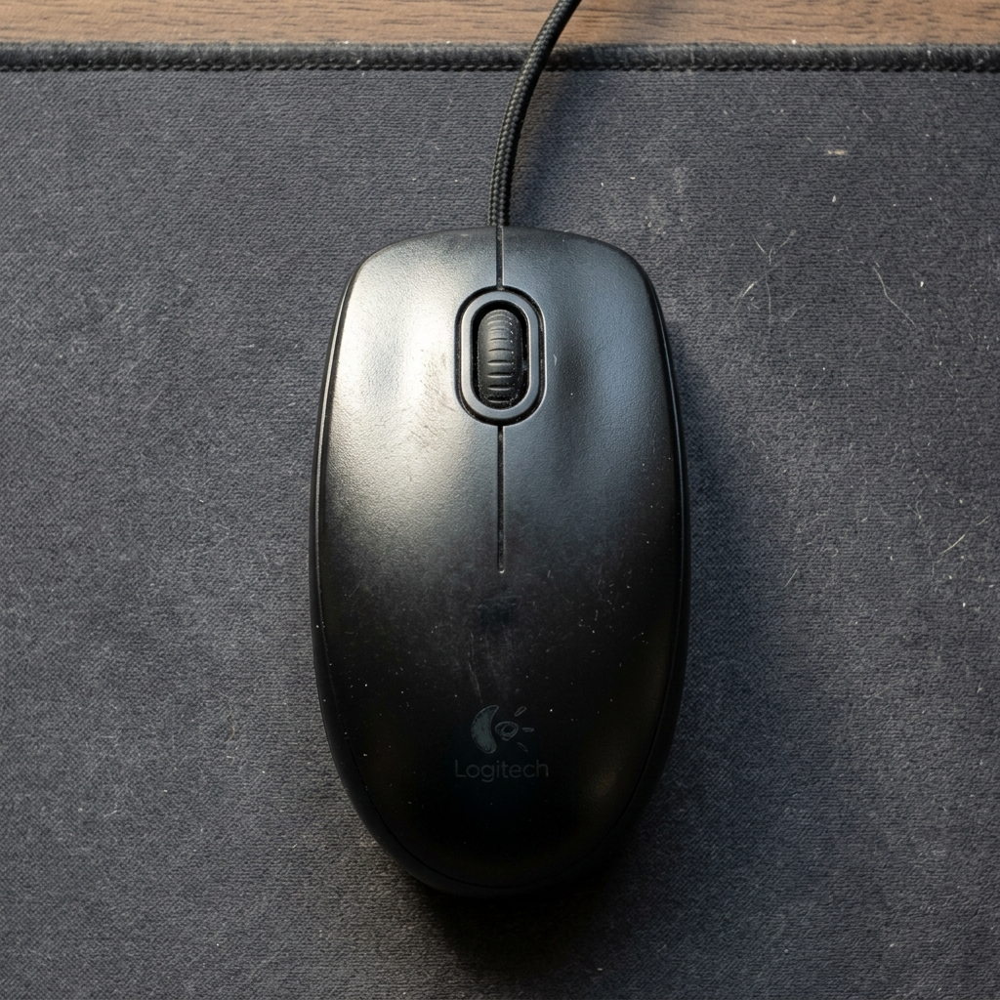
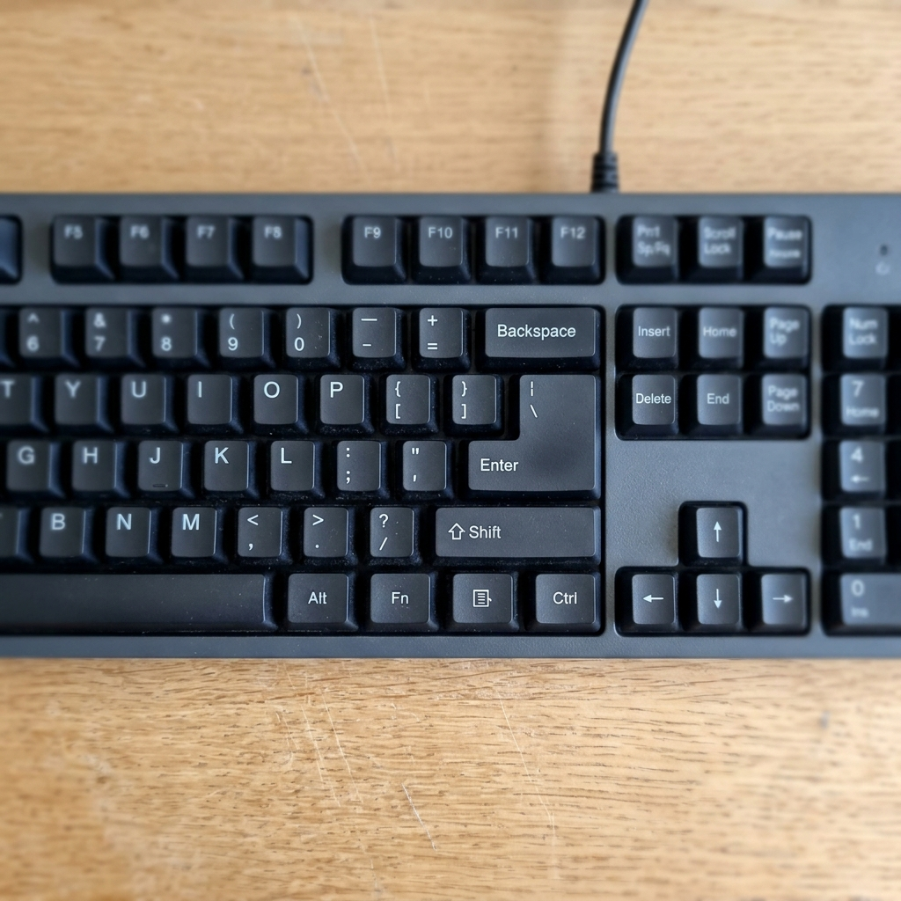

O Segredo Principal: Não tenha medo de clicar!
Muitas pessoas têm receio de encostar no mouse ou no teclado com medo de "estragar o computador" ou apagar algo importante. Fique tranquilo! O mouse serve apenas para você apontar para as coisas na tela, e o teclado serve para escrever. O máximo que pode acontecer se você clicar no lugar errado é abrir uma janela indesejada — e para isso, basta fechá-la no "X" vermelho.
Passo 1: Dominando o Mouse (Seu dedo virtual)
O mouse é a ponte direta entre a sua mão e a tela do computador. Ao deslizar o mouse suavemente sobre a mesa, a "setinha" (chamada de cursor) se move na mesma direção na tela.
Repare que todo mouse possui, no mínimo, dois botões principais e uma rodinha no meio. Entender a diferença entre eles é o que vai te dar independência digital.
O Botão Esquerdo (O Botão de Ação)
Este é o botão que você vai usar em 95% do seu tempo. Se você for destro, ele fica sob o seu dedo indicador. Ele é o responsável por confirmar as suas ações, como se você estivesse apontando o dedo e dizendo: "É isso que eu quero!".

- Um clique simples: Pressione e solte o botão esquerdo uma vez rapidamente. Isso serve para selecionar (marcar) um item na tela.
- Dois cliques rápidos (Duplo clique): Pressione o botão esquerdo duas vezes bem rápido, no mesmo ritmo de dar duas batidinhas na porta ("Toc-Toc"). Isso serve para abrir pastas, programas ou documentos.
- Clicar e arrastar: Pressione o botão esquerdo e não solte. Mova o mouse enquanto segura o botão pressionado para mover uma janela ou item de lugar, soltando apenas quando chegar no destino.
O Botão Direito (O Botão de Opções)
O botão direito (sob o dedo médio) serve exclusivamente para abrir um "menu escondido". Sempre que você clicar com o botão direito em algo, aparecerá uma lista com opções do que você pode fazer (como "Copiar", "Excluir" ou "Renomear").
Dica de Ouro: Abriu essa lista com o botão direito e se arrependeu? Não entre em pânico! Basta dar um clique simples com o botão esquerdo num espaço vazio da tela, e a lista desaparecerá.
A Rodinha Central (Scroll)
Fica entre os dois botões. Girar essa rodinha para trás ou para frente faz a página que você está lendo rolar para baixo ou para cima. É ideal para ler textos compridos na internet sem precisar clicar em nada.
Passo 2: Entendendo o Teclado (A sua máquina de escrever moderna)
Ao olhar para o teclado do seu computador pela primeira vez, a quantidade de botões pode parecer assustadora (são mais de 100 teclas!). Mas aqui vai a boa notícia: Você só precisa conhecer três teclas principais para conseguir navegar na internet, mandar e-mails e escrever textos.

As 3 Teclas Vitais que você precisa decorar:
- A Barra de Espaço (Spacebar):
É a tecla mais comprida do teclado, localizada bem na parte inferior, onde descansam seus polegares. Ela tem uma única função: criar um espaço em branco entre uma palavra e outra enquanto você digita. - A Tecla Apagar (Backspace):
Geralmente fica na parte superior direita e possui uma seta apontando para a esquerda (←). Se você digitar uma letra errada, não se desespere. Pressione o Backspace para apagar a última letra digitada. Pressionar e segurar apagará várias letras rapidamente. - A Tecla de Confirmação (Enter):
É uma tecla grande do lado direito do teclado. O Enter é a forma de dizer ao computador: "Terminei, pode executar". Ao digitar no Google, apertar o Enter inicia a pesquisa. Ao escrever um texto, o Enter faz o cursor pular para a linha de baixo.
Como corrigir os Erros Mais Comuns?
Erro 1: Fui dar dois cliques (Duplo clique) para abrir uma pasta, mas não abriu!
Solução: Dois erros comuns causam isso: ou você clicou muito devagar, ou mexeu o mouse enquanto clicava. Para o duplo clique funcionar, o mouse precisa estar completamente parado na mesa, e os cliques devem ser rápidos (como "Toc-Toc"). Respire, segure o mouse firme na mesa e tente de novo.
Erro 2: Meu texto ficou tUdO MaIúsCuLo e eu não consigo arrumar!
Solução: Você acidentalmente encostou em uma tecla chamada Caps Lock (ou Fixa), que fica no canto esquerdo do teclado. Esta tecla "trava" o teclado inteiro em letras maiúsculas. Para resolver, basta apertá-la uma única vez. Uma luzinha no teclado deve apagar, e as letras voltarão ao normal minúsculo.
Checklist Rápido: Você aprendeu?
- Entendi que o botão esquerdo do mouse é o que escolhe e confirma ações.
- Sei que dois cliques rápidos seguidos no mesmo lugar servem para abrir arquivos.
- Compreendi que o botão direito só serve para abrir listas de opções (menu).
- Sei encontrar o Enter (Confirmar), Backspace (Apagar) e a Barra de Espaço no meu teclado físico.
Seu Próximo Desafio
Agora que você já tem o controle da "setinha" na tela e não tem mais medo de clicar ou digitar, você está pronto para arrumar o seu computador. O próximo guia ensinará o passo a passo de Como criar e organizar pastas no computador para você nunca mais perder uma foto ou documento importante.